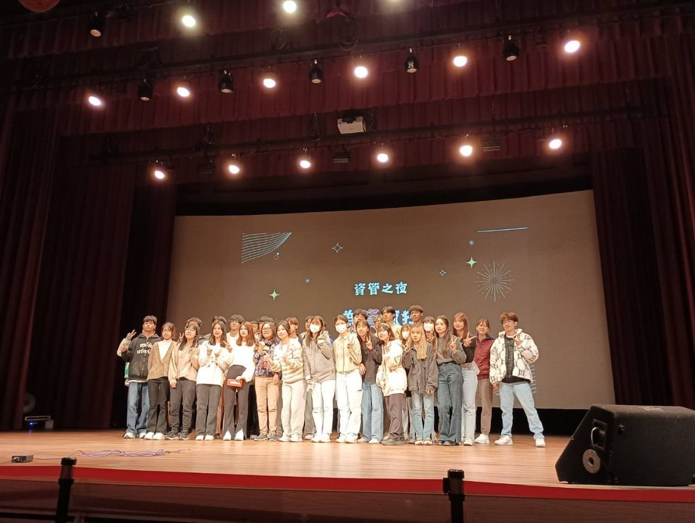

在大一下學期的管理學課程，我跟我組員有這個榮幸去參加和泰集團所舉辦的淨灘活動，為海灘進行清潔。我們在活動開始前聽了一些活動講解，學習如何分類垃圾以及如何安全地處理危險物品。活動當天，我們分組合作，沿著海岸線撿拾塑膠瓶、菸蒂、玻璃碎片和其他廢棄物，雖然炎熱的天氣讓人感到疲憊，但當我們看到整潔的沙灘後，所有的辛苦都化為了成就感。
這次活動讓我深刻體會到環境保護的重要性，特別是海洋污染的嚴重性。人們在日常生活中丟棄的塑膠和垃圾，最終可能進入海洋，影響海洋生態，透過這次淨灘，讓我更有責任感，也決心在日常生活中減少使用一次性塑膠，為環保盡一份心力。

這是參加春暉社的社遊活動，這趟旅程除了欣賞當地的老街風情，也包含了一場有意義的淨灘活動。活動當天，我們一早集合，首先來到彰化著名的老街區域。這裡的建築風格獨特，有古樸的紅磚牆和老舖子，還有許多傳統小吃，讓人彷彿穿越時光。大家一起品嚐了彰化肉圓、麻糬和當地特色甜點，不僅滿足了味蕾，也增進了彼此的感情。
午後，我們移動到附近的海灘展開淨灘行動。活動開始前，社長為我們簡單介紹了淨灘的意義，並教導我們如何有效地撿拾垃圾和進行分類。隨後，我們分組沿著沙灘撿拾塑膠瓶、玻璃碎片、菸蒂等廢棄物。雖然過程中汗流浹背，但看到逐漸變乾淨的沙灘，大家都感到無比的成就感。

參加資管之夜的合唱表演，真的是一次難忘的體驗。從一開始的練習到正式演出的過程，讓我深刻體會到團隊合作與堅持的重要性。一開始，我們彼此並不熟悉，每個人都有自己的節奏與習慣，但隨著一次次的排練，彼此之間的默契逐漸增強，大家的歌聲也越來越和諧。
每個人都在自己的部分上付出努力，為了合唱的整體效果，大家不斷互相調整、配合，無論是音準、拍子還是情緒的拿捏，都經歷了無數次的磨合。最後站上舞台的那一刻，我感受到的是大家共同努力的成果，那是一種難以形容的滿足感和成就感。
這次合唱不僅僅是一次表演，更是一段成長的過程。它讓我學會了如何與他人溝通、協調，也讓我體會到團體表演中每一個人都是不可或缺的一部分。透過這次的經驗，我相信無論在未來的學習或工作中，這些經歷都會讓我受益良多。